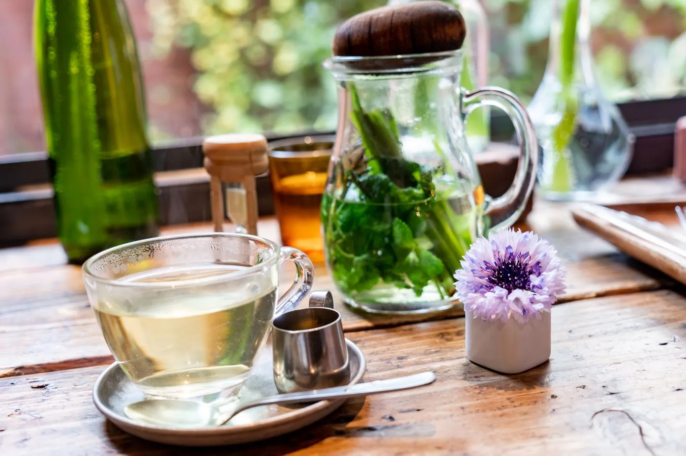
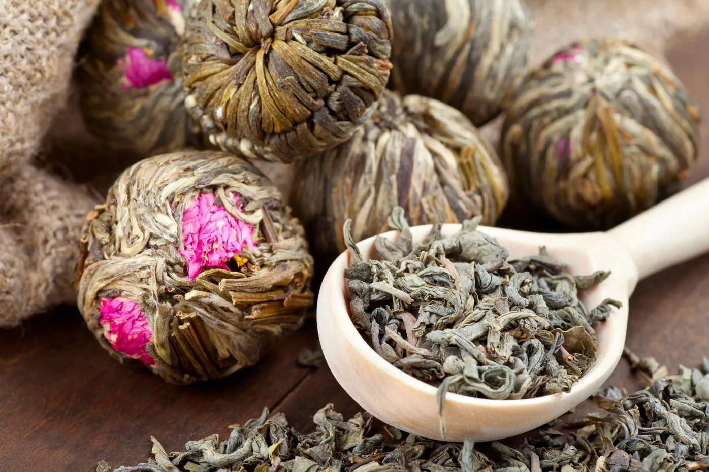
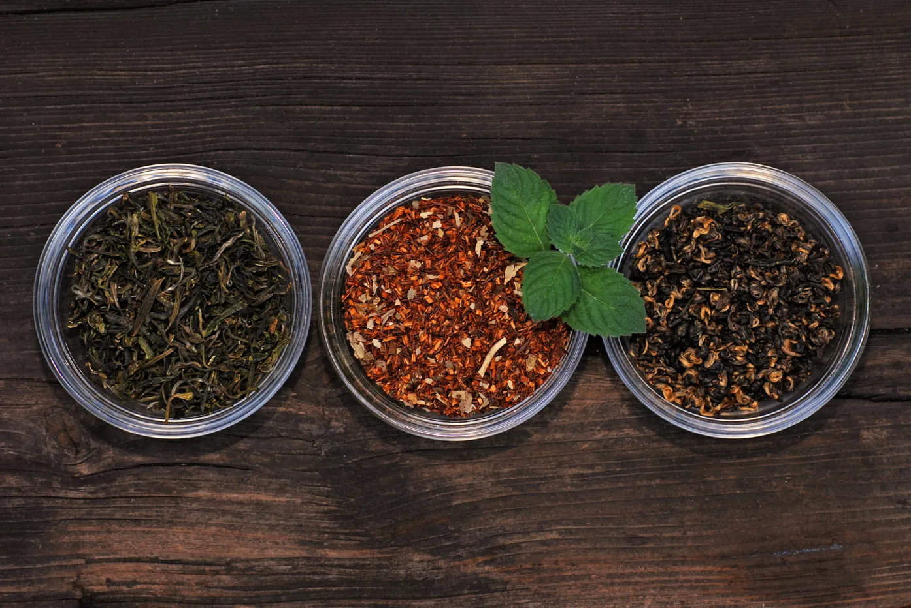
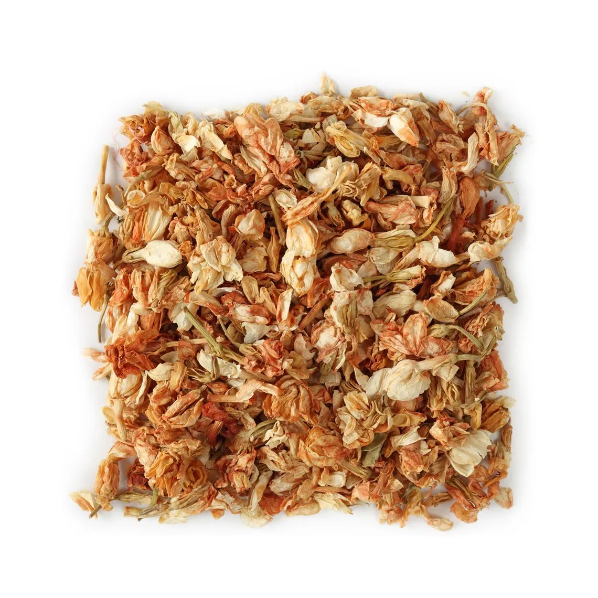
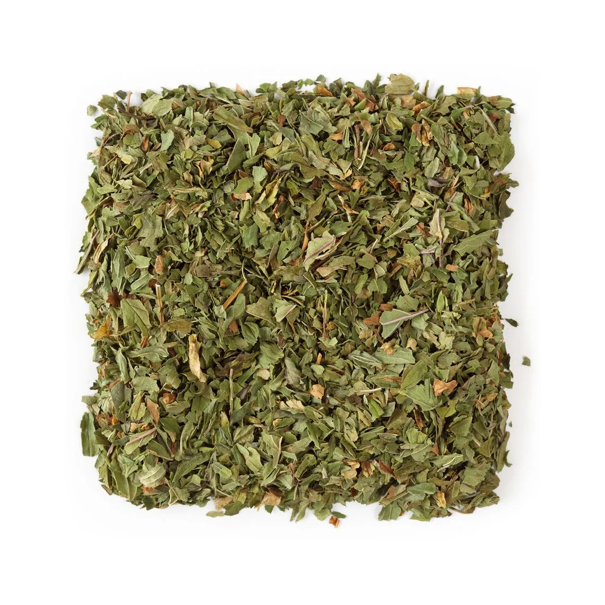

Stone-ground to perfection. Every sip carries five centuries of Japanese tea tradition — from morning ritual to mindful ceremony.
First harvest · Uji, Kyoto Prefecture

Chado Matcha was born from a journey through Kyoto's Uji district — the birthplace of Japanese green tea culture. We came back determined to bring the finest ceremonial matcha directly to India.
We partner with three third-generation family farms in Uji, each with centuries of expertise. Every tin travels from farm to your door in under 72 hours, sealed at peak freshness.
Chado — the Way of Tea — is a living philosophy of mindfulness, craft, and presence. These are the values we bring to every tin we source.
Every batch is traceable to a specific farm and harvest date. We never blend origins to cut costs.
Industrial grinding generates heat that degrades flavour. We insist on traditional granite millstones, always.
We teach the ceremony alongside selling the matcha — because the ritual matters as much as the leaf.
Three tiers, one standard — exceptional. Each stone-ground from shade-grown tencha leaves.
First harvest tencha from century-old Uji farms. Intensely vibrant, sweet umami, zero bitterness.
Second harvest from Nishio region — refined everyday ceremonial matcha with bold, grassy depth.
A robust, slightly astringent matcha built to hold its character through heat and mixing.
Five mindful steps. One transformative ritual.
Arrange Cleanse utensils intention.

Warm to 75–80°C. Preserves sweetness.

Sift 2g finely into warm chawan.
Brisk W-motion until creamy foam.
Three mindful sips. Gratitude.
"The Uji Ceremonial changed my mornings entirely. I replaced coffee six months ago and I've never felt more present."
"The Ceremony subscription is outstanding value. Every month I discover something new — last month's."
"The Chado workshop was the most meditative two hours I've experienced. Booked the full-day immersion."
From Uji's shade-grown fields to your morning bowl — a visual journey through the world of Chado Matcha.






